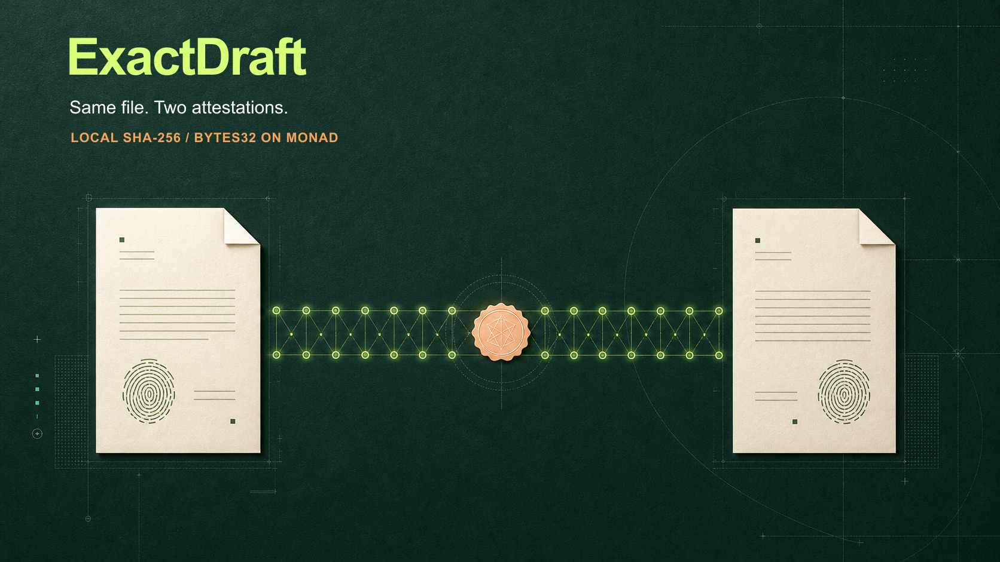

ExactDraft
× BOT Chain
A focused testnet assessment for a two-party document-integrity workflow.
Compare local copies.
Record a wallet acknowledgement.
Browser computes SHA-256.
Digest + opaque reference + wallet roles + expiry.
Acceptance requires the designated wallet and exact digest.
Files stay local
The current app flow does not upload document bytes.
Records are public
Digest, addresses, reference, timestamps, and status are onchain.
Narrow claim
A wallet call attests to a digest. It does not prove identity, authority, possession, reading, or legal effect.
Test a second network without disturbing Monad.
BOT Chain hosts a bounded testnet deployment. The app carries separate network configuration and a chain-scoped review route, while existing Monad records keep their original route.
Deployed on testnet
Chain ID 968 · 0x56a0d7414c950572032b3d434b7c4d09264a3579
Source verified on BOTScan; deployment block 27449470. A synthetic two-wallet create-and-accept flow finalized.
Testnet pilot passed; release readiness remains open
- Vercel BOT settings still pending
- No external security/privacy review
- No mainnet deployment or migration
Move from verified chain evidence to a controlled user pilot.
Configure
Add the verified BOT address and deployment block to the hosted frontend, then verify chain selection, contract code, and explorer links.
Exercise
Run browser workflows with separate wallets: match, mismatch, wrong signer, expiry, cancellation, reload, mobile, accessibility, and RPC recovery.
Own
Complete independent security/privacy review, assign support and incident owners, document RPC fallback, monitoring, rollback, and partner scope.
No files onchain does not mean private.
Data that becomes public
SHA-256 digest · wallet addresses · reference · timestamps · status · transactions
Demo safeguards
Synthetic documents · test wallets · opaque references · no client names · no private keys in repo, frontend, or notes
Technical boundary
No app backend, database, file storage, or indexer today. Direct reads use public RPC endpoints.
Evidence boundary
Receipt inclusion is shown as confirmed. Report the network’s finality guarantee separately; do not overstate a receipt.
Agree the testnet checklist before committing to a pilot.
- Who confirms RPC, chain ID, explorer, faucet, and rate limits?
- Is test gas available, how much, and through what process?
- Who helps with source verification and finality expectations?
- What specific evidence makes the testnet demonstration successful?
- Who owns support, maintenance, security review, and incident escalation?
- Which programme terms and rewards are actually approved in writing?
Suggested next step
Run a short technical assessment. Return with a bounded deployment checklist and estimate; decide separately whether to proceed to a testnet demonstration.
AssessmentTestnet demoInvited pilotMainnet decision
Each stage has its own evidence and go/no-go gate.